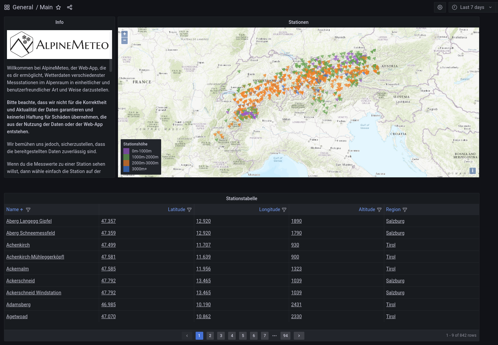
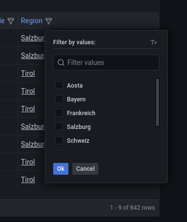
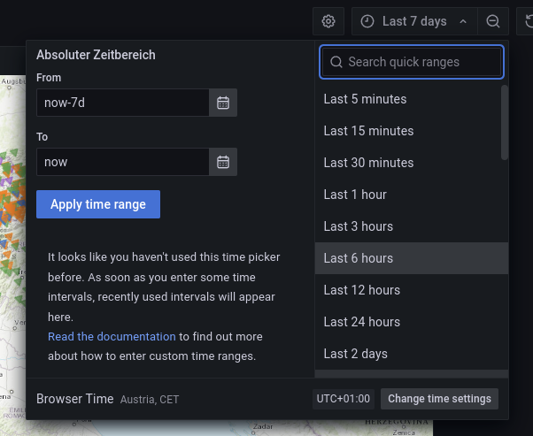

Main-Dashboard
Im Main-Dashboard werden alle Stationen in Form einer Tabelle und auf einer Karte dargestellt angezeigt.
Die Einträge der Tabelle können nach verschiedenen Punkten gefiltert und sortiert werden. Zum Beispiel können mit einem Klick auf „Region“, verschiedene Regionen ein-/ausgeschlossen werden.
Alle angezeigten Stationen enthalten mindestens einen Messwert in der vom Benutzer festgelegten Zeitspanne. Die Zeitspanne kann rechts oben definiert werden.
Die Messstationen, welche in der Karte und der Tabelle dargestellt sind, verlinken auf das Station-Dashboard. Das Station-Dashboard zeigt die Messwerte für die gewählte Station an. Die Zeitspanne, welche im Main-Dashboard gewählt wurde, wird dabei übernommen.